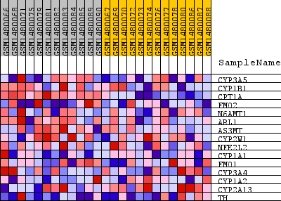
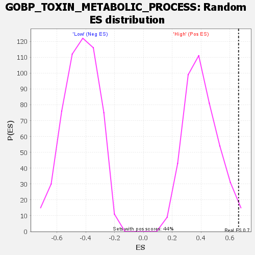

Profile of the Running ES Score & Positions of GeneSet Members on the Rank Ordered List
| Dataset | WG6v3.CPT1A.cls#High_versus_Low.CPT1A.cls#High_versus_Low_repos |
| Phenotype | CPT1A.cls#High_versus_Low_repos |
| Upregulated in class | High |
| GeneSet | GOBP_TOXIN_METABOLIC_PROCESS |
| Enrichment Score (ES) | 0.66050154 |
| Normalized Enrichment Score (NES) | 1.6233287 |
| Nominal p-value | 0.027088037 |
| FDR q-value | 1.0 |
| FWER p-Value | 1.0 |
| SYMBOL | TITLE | RANK IN GENE LIST | RANK METRIC SCORE | RUNNING ES | CORE ENRICHMENT | |
|---|---|---|---|---|---|---|
| 1 | CYP3A5 | CYP3A5 | 31 | 0.227 | 0.2785 | Yes |
| 2 | CYP1B1 | CYP1B1 | 199 | 0.138 | 0.4398 | Yes |
| 3 | CPT1A | CPT1A | 257 | 0.125 | 0.5915 | Yes |
| 4 | FMO2 | FMO2 | 958 | 0.074 | 0.6465 | Yes |
| 5 | N6AMT1 | N6AMT1 | 1907 | 0.051 | 0.6605 | Yes |
| 6 | ARL1 | ARL1 | 3030 | 0.036 | 0.6470 | No |
| 7 | AS3MT | AS3MT | 4355 | 0.024 | 0.6081 | No |
| 8 | CYP2W1 | CYP2W1 | 5082 | 0.019 | 0.5939 | No |
| 9 | NFE2L2 | NFE2L2 | 5781 | 0.015 | 0.5763 | No |
| 10 | CYP1A1 | CYP1A1 | 8373 | 0.005 | 0.4488 | No |
| 11 | FMO1 | FMO1 | 8501 | 0.005 | 0.4479 | No |
| 12 | CYP3A4 | CYP3A4 | 8789 | 0.004 | 0.4375 | No |
| 13 | CYP1A2 | CYP1A2 | 13064 | -0.010 | 0.2300 | No |
| 14 | CYP2A13 | CYP2A13 | 14444 | -0.018 | 0.1813 | No |
| 15 | TH | TH | 17697 | -0.061 | 0.0889 | No |

